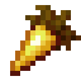

Description
Potion of Invisibility is a type of potion that, when consumed, makes the player or entity invisible for a limited duration. When under the effect of this potion, other players and mobs cannot see you, which can be advantageous for various in-game scenarios.
Ingredients
To make Extended Potion of Invisibility, You will need:
-

Water Bottle
You will need empty glass bottles, which you can obtain by right-clicking on a water source or by using glass bottles in your crafting grid.
-

Nether Wart
Nether Wart is a plant that grows in the Nether. You'll need at least one Nether Wart for the brewing process.
-

Golden Carrot
Golden Carrots are made by crafting a Carrot with a Gold Ingot. They are the key ingredient for making a Potion of Invisibility.
-

Blaze Powder
Blaze Powder is used as fuel for the Brewing Stand.
-

Redstone Dust
This is used to extend the duration of your potion.
-

Brewing Stand
You'll need a Brewing Stand to create and modify potions.
Steps
Follow the Following Steps to Make Extended Potion of Invisibility:
-

Prepare Water Bottle
Place the Water Bottles in the Brewing Stand and add Blaze Powder as fuel. This will create three awkward potions.
-

Add Awkward Potion
An Awkward Potion is a base potion in Minecraft.
-
Add Nether Wart
Place Nether Wart in the Brewing Stand's ingredient slot to convert the Water Bottles into Potion of Awkward Invisibility.
-
Add Golden Carrot
Add the Golden Carrot to the Brewing Stand to create the Potion of Invisibility.
-
Add Redstone Dust
Add Redstone Dust to the Brewing Stand to extend the duration of the potion, turning it into an Extended Potion of Invisibility.